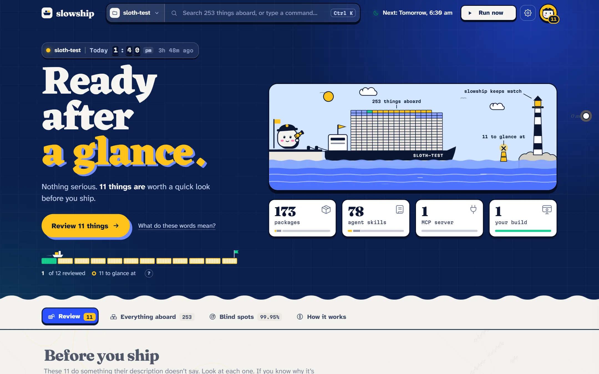

Getting started
What slowship is
slowship is a careful reader for everything your project brings aboard. It reads the code of your packages, your coding agent’s skills and MCP servers, and your own build, without running any of it, and tells you which ones do more than they say.

#The idea in one example
Say you install a package called tidy-dates. Its description says: “Formats dates the way people say them.” That’s its promise.
slowship opens its code and lists what the code can actually do. Here it finds three things:
- It formats dates. The description says so. That’s fine.
- It reads your npm login file. The description never mentions it.
- It sends data to a server. The description doesn’t mention this either.
Reading a login file right next to a network call is one of the few combinations slowship treats as serious. So the verdict is held in port, and the report shows you the exact lines that did it.
That’s the whole job: does this do what it says it does? Most things do. slowship stays quiet about those and only speaks up, with evidence, when something doesn’t.
#What you get in the morning
Every watch ends in one of three verdicts:
| Verdict | What it means | What to do |
|---|---|---|
| Held in port | Something does more than it says, and the proof is a combination found in its code. | Look at it before you ship. |
| Ready after a glance | Nothing serious. A few single facts the descriptions don’t mention. | Spend a few seconds on each, then clear them. |
| Cleared to sail | Everything aboard does what it says, as far as its code shows. | Ship it. |
#What makes it different
- It runs on your laptop. The code never leaves your computer. The model that compares descriptions with code is a small open one, running through Ollama on your own machine.
- It reads, it never runs. No install scripts, no starting MCP servers, no
require. Checking something should never be the way it gets in. - It stays quiet. Scanners that cry wolf get ignored. slowship holds the ship only for combinations found in code, and the model can never talk a hold away.
- It shows its evidence. Every finding comes with the file, the line, and the real code around it.
- It’s honest about what it can’t see. The report lists every blind spot. No findings is not proof of nothing.
#Where to go next
Or try the live demo: the real report page, replaying one recorded night.